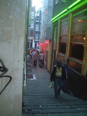
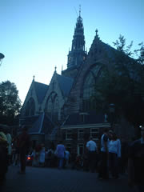

みんな気さくに手を振る。カーテンが閉まってるのは、お取り込み中。。。
このあたり一帯は、セクシャルなお店が点在し、その中心に教会が立つ。神の手に踊らされる人間の性（さが）。
しかし、さまざまな男性のご要望にこたえるべくイロイロな女性が揃っていまふ。
さまざまな人種、フェチ関係、ロリータ、その逆、重量級。ディープなご要望にこたえる一角もあるそうで。。。
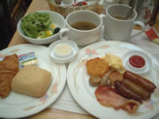
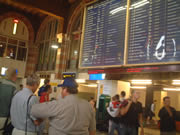
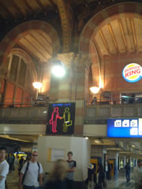
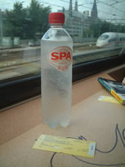
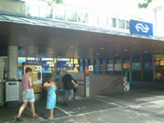
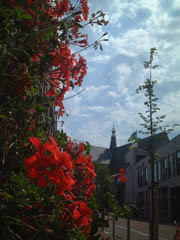
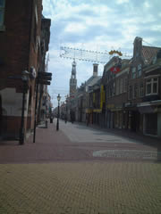
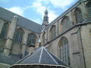
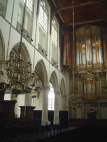
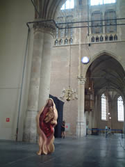
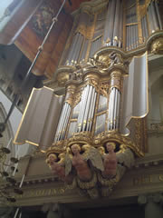
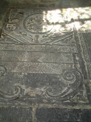
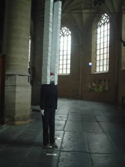
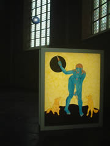
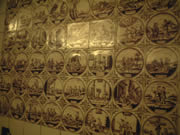
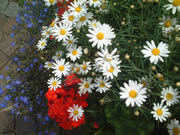
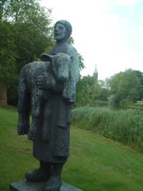
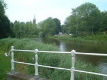
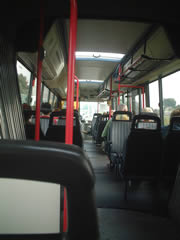
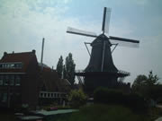
風車が並ぶ牧歌的な村。
あちこちに鴨やウサギが闊歩して、橋は跳ね橋。
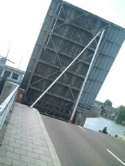
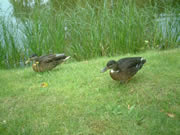
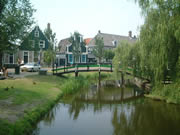
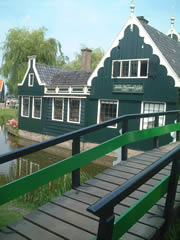